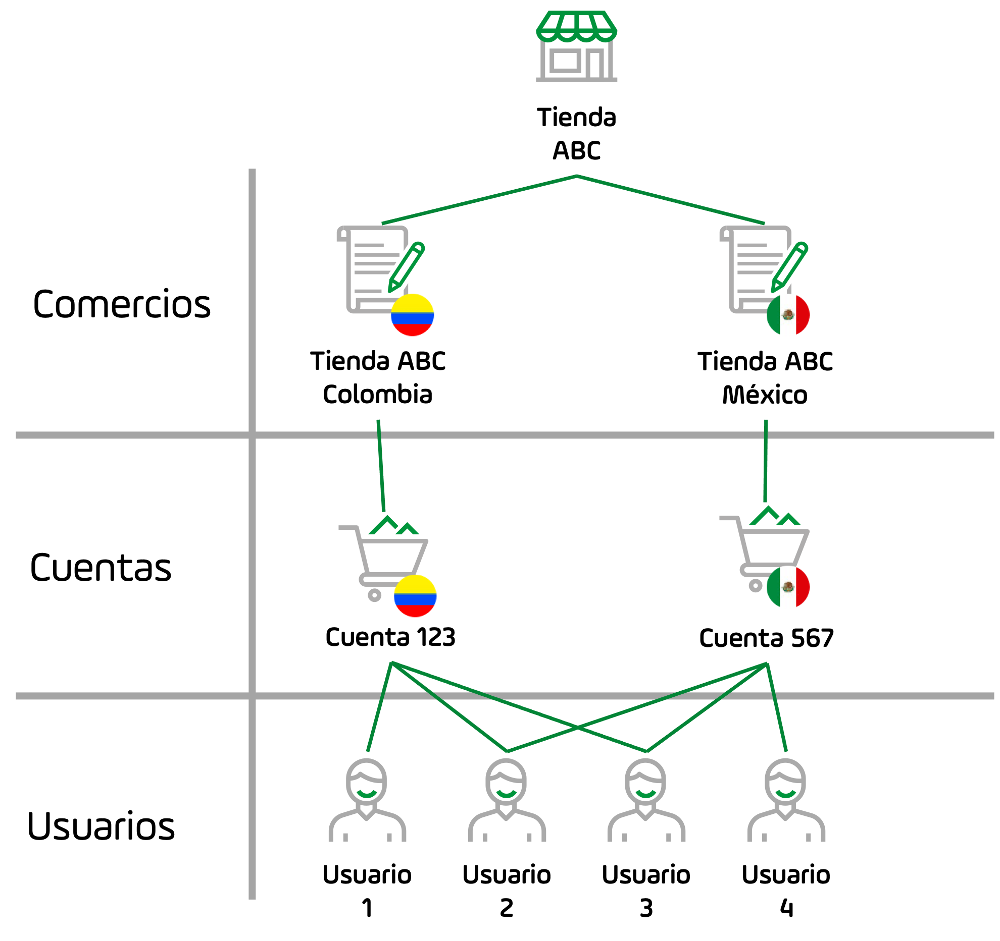
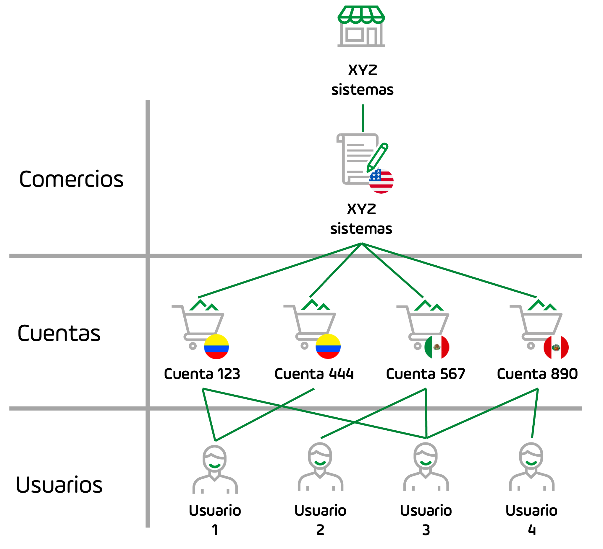
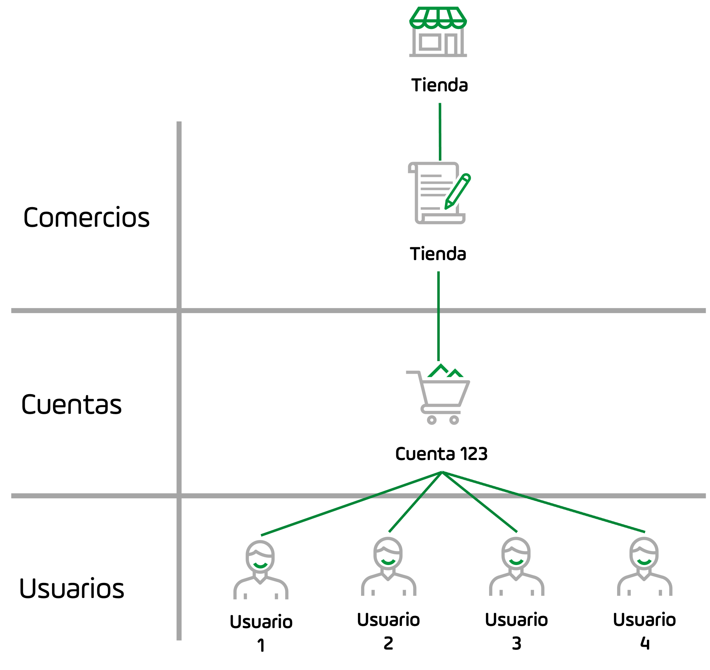

Módulo PayU
Hacemos que sea fácil para los comercios ofrecer pagos en línea mientras eliminamos la carga de la integración con múltiples métodos de pago.
El módulo PayU es el sistema donde puedes manejar tu cuenta de forma segura. En este módulo, puedes cambiar tu contraseña, obtener reportes de ventas, encontrar la información necesaria para integrar tu página web con nuestra plataforma, utilizar herramientas pra recibir pagos y transferir dinero a tu cuenta bancaria.
El módulo PayU es ideal para negocios que necesitan:
- Tener control de su inventario y conocer las ventas aprobadas a través de PayU.
- Tener la información más actualizada sobre los movimientos financieros en su cuenta.
- Realizar cualquier solicitud de soporte o ayuda sobre su cuenta.
Nota
Haz clic
aquí para consultar la documentación del Módulo Administrativo, también conocido como secure.
Para acceder al módulo PayU, ingresa a www.payu.com, at la esquina superior derecha, encontrarás la opción para iniciar sesión. Para comercios en Colombia, esta opción se llama PayU Login.
O si lo prefieres, puedes ir directamente a https://merchants.payulatam.com/.
Nota
¿Aún no tienes usuario? Aprende a crear uno
aquí.
¿Qué puedes hacer utilizando el Módulo PayU?
El Módulo PayU te permite realizar las siguientes operaciones:
- Ver el dinero disponible en tu cuenta PayU y realizar la transferencia a tu cuenta bancaria.
- Consultar los movimientos de tus cuentas, generar extractos y reportes.
- Consultar el estado de las ventas realizadas.
- Encontrar las credenciales de autenticación para realizar las integraciones: API Key, API Login y merchant ID (Id del Comercio).
- Actualizar tus datos bancarios.
- Configurar el logo de tu empresa para que aparezca en el Web Checkout (pasarela de pagos).
- Configurar las URLs de tu página de confirmación y página de respuesta (si tienes una integración por API o Web Checkout).
Conceptos del Módulo PayU
El Módulo PayU le permite a un usuario administrar el comercio y sus cuentas relacionadas. La complejidad de tu Módulo PayU depende de tu tamaño. Vamos a explicar esto utilizando los siguientes conceptos.
- Comercio (Merchant): el comercio es la tienda que ofrece productos o servicios. PayU define el comercio como la persona legal que contrata los servicios de PayU. Si tu tienda está legalmente constituida en dos paises (dos entidades legales), cada entidad debe ser creada como un comercio.
Por ejemplo, Tienda ABC tiene sucursales en México y Colombia, pero la tienda ha constituido una compañía en cada país, cuando Tienda ABC contrata los servicios de PayU, PayU crea dos comercios diferentes.
Nota
Cada comercio en PayU tiene un único Merchant ID.
- Cuenta (Cuenta): una cuenta en PayU representa un país de procesamiento, una línea de negocio o una funcionalidad contratada de un comercio dado. Si tu tienda está legalmente constituida en un país y vende productos en varios, tienes un único comercio een el cual encuentras una cuenta por cada país.
Por ejemplo, XYZ sistemas es una compañía legalmente constituida en los Estado Unidos que ofrece servicios de hosting en Colombia, México y Perú. Cuando XYZ sistemas contrata los servicios de PayU, PayU crea un comercio con tres cuentas.
Adicionalmente, una cuenta puede ser una de las siguientes:
- Una línea de negocio: cuando un comercio ofrece varias líneas de negocio en un país específico. Por ejemplo, una compañía puede ofrecer su producto como una línea de negocio y la capacitación como otra. En este caso, este comercio tiene dos cuentas.
- Una funcionalidad: si contratas dos funcionalidades de PayU con diferente esquema de precios, cada funcionalidad es representada en tu Módulo PayU como una cuenta. Por ejemplo, una tienda tiene un precio por procesar con tarjetas de crédito y otro diferente para pagos en efectivo.
- Usuario (User): un usuario es la persona que tiene un perfil para administrar o consultar la información de una cuenta.
Un perfil es un conjunto de permisos para acceder a una cuenta. Un usuario puede tener uno o más perfiles, esto significa que un usuario puede acceder a múltiples cuentas y múltiples comercios.
Las siguientes gráficas muestran la relación entre estos conceptos.
Tienda multicomercio
La tienda Tienda ABC tiene sucursales en México y Colombia, ambas legalmente constituidas como Tienda ABC México y Tienda ABC Colombia, esta es la relación entre los conceptos anteriores para este ejemplo:

-
El módulo PayU de Tienda ABC tiene dos comercios: Tienda ABC México y Tienda ABC Colombia, cada comercio tiene una cuenta ya que procesan únicamente en l país donde están constituidos.
-
Tienda ABC tiene cuatro usuarios; Usuario 2 y Usuario 3 pueden acceder a ambas cuentas, mientras que Usuario 1 puede acceder a la cuenta colombiana y Usuario 4 a la cuenta mexicana.
Nota
En este caso, cada comercio puede tener múltiples cuentas si lo requiere.
Tienda de comercio único con múltiples cuentas
XYZ sistemas es una compañía legalmente constituida en Estados Unidos que ofrece servicios de hosting web en Colombia, México y Perú; adicionalmente, XYZ sistemas tiene dos líneas de negocio en Colombia: hosting web y entrenamiento. Esta es la relación entre los conceptos anteriores para este ejemplo:

-
El módulo PayU para XYZ sistemas tiene un único comercio ya que están constituidos legalmente en Estados Unidos. Como XYZ sistemas procesa en tres paises, este comercio cuenta con cuatro cuentas; dos para Colombia (una por cada línea de negocio), una para México y una para Perú.
-
XYZ sistemas tiene cuatro usuarios; Usuario 3 puede acceder a todas las cuentas, mientras que los demás usuarios pueden acceder a su país asignado.
Nota
Los comercios pueden estar fuera de nuestros paises de procesamiento. Sin embargo, requieren tener una cuenta bancaria intermediaria en cada país donde quiera procesar.
Comercios únicos con cuenta única
Este es el caso más común cuando utilizas el módulo PayU. Una tienda está legalmente constituida en un país donde ofrece sus productos o servicios, esta es la relación entre los conceptos anteriores para este ejemplo:

- El módulo PayU para esta tienda tiene una única cuenta y un único comercio, donde todos sus usuarios pueden acceder de acuerdo con el perfil que tengan.
Temas en esta sección
Aprende cómo iniciar sesión en tu cuenta, recuperar tu contraseña y actualizar tus datos de usuario.
Aprende cómo administrar los usuarios, perfiles y permisos para acceder a las cuentas en tus comercios.
Aprende cómo vender utilizando PayU, transferir fondos, reembolsar transacciones y gestionar disputas.
Aprende a consultar tus estados de cuenta, transferencias, ventas y más información que tu tienda pueda necesitar para cumplir con las regulaciones.
Última modificación
7 de diciembre de 2021:
Deprecated articles (cee7a9e5)